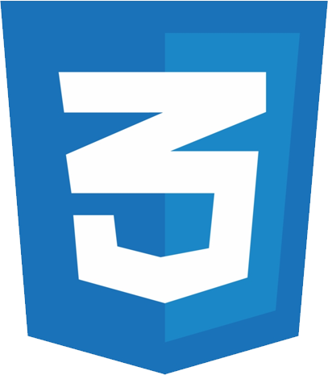
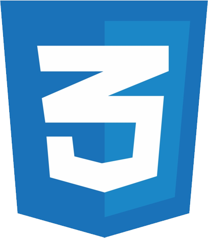
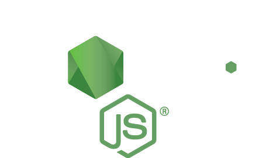
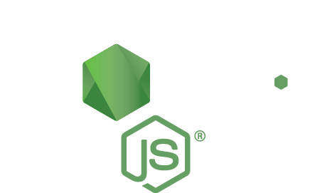

Education

Rensselaer Polytechnic Institute
Graduated May 2012 (both degrees)
Bachelor's of Science - Games and Simulation Arts and Sciences
Master's of Science - Human-Computer Interaction
University of Wisconsin - Madison
Graduated August 2020
Graduate Capstone Certificate - User Experience Design
Work History

UW-Madison | Center for the First-Year Experience
September 2018 - Present
Coordinator of First-Year Technology and Applications
Skills
 


 
